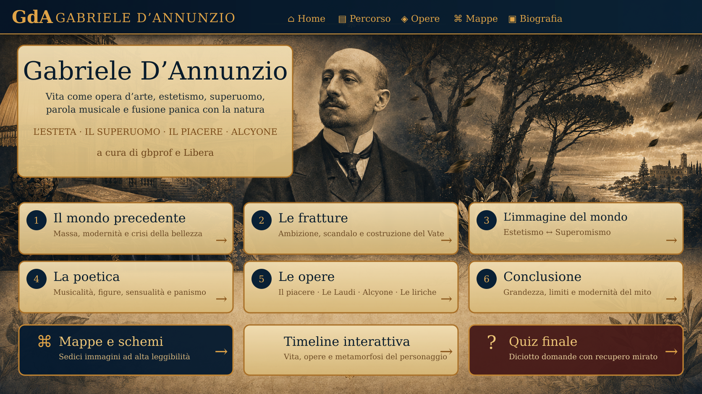

Gabriele D’Annunzio — copertina e indice interattivo

Movimento 1 · La realtà ricevuta
Il mondo precedente
Quale società, quale cultura e quale idea dell’artista riceve D’Annunzio dall’Italia di fine Ottocento?
D’Annunzio entra nella scena quando la società borghese diventa società di massa. La bellezza non è più protetta da un pubblico aristocratico: deve misurarsi con stampa, folla, mercato e politica.
Dalla società di massa alla necessità di una nuova figura di guida.
Controllo formativo
Verso le fratture. La crisi storica incontra un’ambizione personale: non soltanto scrivere, ma emergere e diventare personaggio.
Movimento 2 · Vita, immagine, azione
Le fratture
Quali esperienze e contraddizioni spingono D’Annunzio a trasformare la propria vita in un’opera?
L’ambizione privata diventa strategia pubblica.
Controllo formativo
Verso l’immagine del mondo. La notorietà non basta: occorre un modello di uomo capace prima di separarsi dalla massa, poi di guidarla.
Movimento 3 · Due risposte alla modernità
L’immagine del mondo
Che cosa accade quando la bellezza diventa un valore assoluto e, successivamente, un diritto di comando?
Fase 3A
Estetismo: la bellezza contro il mondo comune
Verifica dell’estetismo
Fase 3B
Superomismo: dall’isolamento al comando
Verifica del superomismo
Esteta e superuomo: continuità del privilegio, trasformazione della funzione.
Verso la poetica. Un individuo eccezionale ha bisogno di una parola altrettanto eccezionale: capace di sedurre, trasformare e far parlare la natura.
Movimento 4 · La parola trasforma
La poetica
Quale lingua serve per trasformare il mondo in esperienza estetica, sensoriale e musicale?
Il suono non decora il senso: lo produce.
Controllo formativo
Verso le opere. Il linguaggio musicale deve ora misurarsi con personaggi, desiderio, fallimento, paesaggio e metamorfosi.
Movimento 5 · Laboratori testuali
Le opere
Dove estetismo, superomismo e panismo diventano personaggi, immagini, suono e conflitto?
Le opere trasformano le formule in conflitti e forme.
Controllo formativo
Verso la conclusione. Dopo la seduzione delle forme resta una domanda: quale eredità sopravvive e quali limiti non vanno nascosti?
Movimento 6 · Ricomporre senza assolvere
Conclusione
Che cosa resta di D’Annunzio quando smettiamo di ridurlo all’esteta, al superuomo o al poeta-vate?
D’Annunzio non è una sola formula. È il luogo in cui arte, mercato, vita privata, propaganda e politica imparano a usare la stessa macchina: la costruzione dell’immagine.
La grandezza
La sua lingua rinnova il repertorio poetico italiano attraverso musicalità, analogia, varietà metrica e precisione sensoriale. In Alcyone l’artificio raggiunge una naturalezza apparente: la parola si fa pioggia, fruscio, attesa, metamorfosi. Il poeta comprende inoltre con anticipo che l’autore moderno non vive soltanto nei libri, ma nella stampa, nella fotografia, nell’evento e nel racconto pubblico di sé.
Il limite
La centralità dell’individuo eccezionale può trasformare l’altro in materia: accade nelle relazioni di Andrea Sperelli e, sul piano collettivo, nell’idea di una massa destinata a essere guidata. Nazionalismo, culto dell’azione e linguaggio del comando non sono incidenti separabili a piacere dall’opera; appartengono alle contraddizioni storiche del personaggio.
La modernità controversa
D’Annunzio anticipa la società dello spettacolo senza esserne un semplice profeta positivo. Mostra insieme la potenza e il costo dell’auto-rappresentazione: la vita trasformata in opera acquista un’enorme efficacia pubblica, ma rischia di perdere verità, reciprocità e limite. Per questo continua a essere utile: non offre un modello da imitare, ma un caso straordinariamente lucido da comprendere.
Sintesi
Dal mondo di massa alla costruzione dell’esteta, dalla sua crisi al superuomo, dalla parola musicale alle opere: il percorso mostra una continuità nella ricerca di eccezionalità. La grandezza formale convive con limiti ideologici e relazionali che una lettura storica non deve cancellare.
Saperi irrinunciabili
Ricomporre i sei movimenti in una catena.
Distinguere innovazione artistica e ideologia.
Spiegare la modernità della costruzione pubblica dell’autore.
Valutare il rapporto fra bellezza, dominio e alterità.
Motivare l’eredità controversa di D’Annunzio.
Vocabolario
Auto-rappresentazione
Costruzione pubblica della propria identità.
Società dello spettacolo
Spazio nel quale l’immagine diventa parte centrale della vita collettiva.
Eredità
Effetti duraturi su lingua, cultura e modelli pubblici.
Contraddizione
Coesistenza non pacificata di grandezza e limite.
Grandezza e limite non si annullano: devono essere pensati insieme.
Controllo formativo
Sedici schemi originali ad alta risoluzione
Mappe e schemi
Le anteprime sono leggere; il pulsante apre sempre il PNG originale con zoom.
Verifica trasversale
Quiz finale
Diciotto domande sui sei movimenti. Dopo la correzione puoi recuperare e rifare soltanto gli errori.